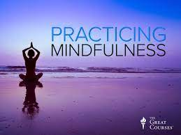

- 1.Focus on the positive.
To find long-term happiness, you need to retrain your brain from a negative mindset to a positive mindset.Try these things:Choose a positive mantra for the day -- something you will repeat to yourself, such as “Today is beautiful” or “I feel grateful for all I have.” And when things go south, take a moment to try and see it from a positive light.
- 2.Celebrate little victories.
Life is full of ups and downs, but in between we have a lot of little victories that go unnoticed. Take a moment to celebrate these small wins.
Did you check off all the things on your to-do list that you’ve been procrastinating on? Yay! Did you finally clear out a thousand emails that have been filling up your inbox? Woohoo! Take pleasure in these little achievements. They add up!
- 3.Find your work–life-life balance.
Work takes up a lot of our day, but it shouldn’t be the only thing we do. It’s important to pursue activities and interests beyond our job. Do you have a hobby? Are you spending time with friends and loved ones? Are you getting exercise? Creating balance in your life will reduce stress and give you other outlets to express yourself and have fun.
- 4.Practice mindfulness.

Practicing mindfulness means being present, aware and curious. Accepting what we are going through decreases stress and helps us see situations for what they are. Through mindfulness, we can find peace and affirmation in ourselves.
- 5.Be creative.

Those who spend time using their imagination and being creative have more enthusiasm and are more likely to have feelings of long-term happiness and well-being. Such creative activities can include writing, painting, drawing and musical performance.
- 6.Accept imperfection.

Many of us strive for perfection -- we desire to push ourselves to be our best. But in order to be truly happy, you must embrace the imperfection that is part of life. Perfection is impossible, Accept that life is imperfect and recognize that there is beauty and grace in that imperfection.
- 7.Do what you love.
Beleive in yourself.Listen to your gut and do what you love.It’s pretty hard to maintain happiness if you hate your job. Don’t waste the best years of your life in a joyless job, even if it’s paying the bills.Focus on building a career in an area that motivates you and will provide you with a high level of satisfaction, and your happiness factor will go up exponentially.
- 8.Spend wisely.
It’s tempting to believe that the more money you have, the happier you’ll be. But the reality is, it’s how you spend your money that helps you feel happier. The key is to do it wisely. Spending money on experiences -- travel, dining, concerts and so on -- can make us happier because we are sharing those experiences with others. Happiness connected to material possessions fades, but experiences help us define our purpose and passions in life.
- 9.Live in the moment.
Our thoughts and feelings often revolve around the past or the future. Reality is what you are experiencing in this very moment; what you are going through right now. Sometimes we want to escape that reality. But when we stay in the present, we are fully engaged in our lives. Endeavor to live in the moment, and you’ll begin to have a deeper appreciation for your life.
- 10.Nothing compares to you.
Stop comparing yourself to everyone around you. Most importantly, stop comparing your things to all the things everyone else has. Social media has a way of making us feel like everyone else has it better than us.
- 11.Spend time in nature.
Some researchers believe that today’s ultra-wired generation is actually suffering from a nature-deficit disorder. Studies have shown that the more time we spend in nature, and the more we relate to the natural world around us, the greater our sense of happiness. Our connection to nature also plays a role in maintaining positive mental health.
- 12.Stop Worrying.

Constantly worrying about everything creates toxic anxiety, where your mind is steeped in negative, spiraling thoughts. Worries plague your mind and make you afraid and apprehensive about things you often have no control over. Sometimes we believe that if we worry enough, we can keep bad things from happening. But the truth is, you cannot experience joy or even contentment when you’re consumed by worry.
To find long-term happiness, you need to retrain your brain from a negative mindset to a positive mindset.Try these things:Choose a positive mantra for the day -- something you will repeat to yourself, such as “Today is beautiful” or “I feel grateful for all I have.” And when things go south, take a moment to try and see it from a positive light.
Life is full of ups and downs, but in between we have a lot of little victories that go unnoticed. Take a moment to celebrate these small wins. Did you check off all the things on your to-do list that you’ve been procrastinating on? Yay! Did you finally clear out a thousand emails that have been filling up your inbox? Woohoo! Take pleasure in these little achievements. They add up!
Work takes up a lot of our day, but it shouldn’t be the only thing we do. It’s important to pursue activities and interests beyond our job. Do you have a hobby? Are you spending time with friends and loved ones? Are you getting exercise? Creating balance in your life will reduce stress and give you other outlets to express yourself and have fun.
Practicing mindfulness means being present, aware and curious. Accepting what we are going through decreases stress and helps us see situations for what they are. Through mindfulness, we can find peace and affirmation in ourselves.
Those who spend time using their imagination and being creative have more enthusiasm and are more likely to have feelings of long-term happiness and well-being. Such creative activities can include writing, painting, drawing and musical performance.
Many of us strive for perfection -- we desire to push ourselves to be our best. But in order to be truly happy, you must embrace the imperfection that is part of life. Perfection is impossible, Accept that life is imperfect and recognize that there is beauty and grace in that imperfection.
Beleive in yourself.Listen to your gut and do what you love.It’s pretty hard to maintain happiness if you hate your job. Don’t waste the best years of your life in a joyless job, even if it’s paying the bills.Focus on building a career in an area that motivates you and will provide you with a high level of satisfaction, and your happiness factor will go up exponentially.
It’s tempting to believe that the more money you have, the happier you’ll be. But the reality is, it’s how you spend your money that helps you feel happier. The key is to do it wisely. Spending money on experiences -- travel, dining, concerts and so on -- can make us happier because we are sharing those experiences with others. Happiness connected to material possessions fades, but experiences help us define our purpose and passions in life.
Our thoughts and feelings often revolve around the past or the future. Reality is what you are experiencing in this very moment; what you are going through right now. Sometimes we want to escape that reality. But when we stay in the present, we are fully engaged in our lives. Endeavor to live in the moment, and you’ll begin to have a deeper appreciation for your life.
Stop comparing yourself to everyone around you. Most importantly, stop comparing your things to all the things everyone else has. Social media has a way of making us feel like everyone else has it better than us.
Some researchers believe that today’s ultra-wired generation is actually suffering from a nature-deficit disorder. Studies have shown that the more time we spend in nature, and the more we relate to the natural world around us, the greater our sense of happiness. Our connection to nature also plays a role in maintaining positive mental health.
Constantly worrying about everything creates toxic anxiety, where your mind is steeped in negative, spiraling thoughts. Worries plague your mind and make you afraid and apprehensive about things you often have no control over. Sometimes we believe that if we worry enough, we can keep bad things from happening. But the truth is, you cannot experience joy or even contentment when you’re consumed by worry.